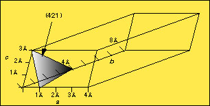
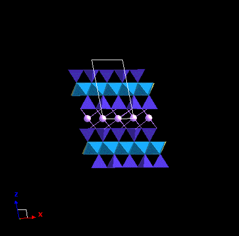
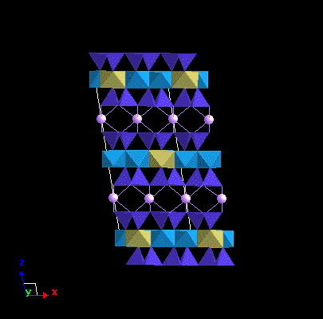
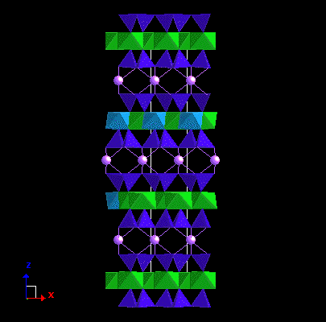

8 - Lecture notes for GEOL3010
Klein 136-142
Nesse 65-69, 239
|  |
a |
b |
c |
| Axial lengths |
4 Å |
8 Å |
3 Å |
| Intercept lengths |
1 Å |
4 Å |
3 Å |
| Fractional intercepts |
1/4 |
1/2 |
1 |
| Reciprocals |
1 1/4 |
1 1/2 |
1 1/1 |
| Miller indices |
4 |
2 |
1 |
Relationship between the size of the indices and the length of the d-spacing.
Large d-spacings have small Miller indices and pass through a high density of lattice points, (i.e., the small d-spacings have large Miller indices and pass through a low density of lattice points). See figure below.
The positions of atoms can be thought of as a set of points in space with the Bravais lattice.
The simplest case is for those minerals that are made of all the same atoms (i.e., the native elements) and having only one atom as part of the original motif.
The easiest place to start is by locating an atom at the origin (0,0,0) in the fractional coordinate system of the lattice.
Examples that include a single atom type in the isometric system include:
Silver, Copper and Gold - Face-centered isometric (Fm3m)
alpha-iron - body centered (Im3m)
Diamond - Face-centered (Fd3m)
Examples are: sulfur and graphite (a = 2.46Å, c = 6.74Å)
| Graphite (P3) | x - fractional coord. | y - fractional coord. | z - fractional coord. |
| C1 | 0 | 0 | 0 |
| C2 | 0 | 0 | 1/2 |
| C3 | 1/3 | 2/3 | 0 |
| C4 | 2/3 | 1/3 | 1/2 |
Symmetry operations using the elements of the P3 space group and the atom motifs in the above positions generate the unit cell and graphite crystal structure shown below.
The next level of complexity is reached with the case of having two or more atom types associated with each Bravais lattice point.
Crystal structure of compounds of two different atom types. (e.g., AxBy)
The rules of symmetry require that after an operation is complete on the compound AxBy, the same atom precisely reappears (i.e., translations of F- , I- ,C-centered lattices must begin and end on atoms of the same kind).
Secondly, The set of A atoms and B atoms must both possess the same symmetry elements within the unit cell of crystal. Any operation about a symmetry element must bring a given atom A into coincidence with another atom A.
Examples.
What is the Bravais lattice of CsCl? At first, one might think it is an I-centered. However, because of unlike atoms this is not an I-centered lattice. It is a primitive isometric. In practice, the position of atoms are described relative to the points in the 14 Bravais lattice types.
When it comes to illustrating the atomic coordinates of the a unit cell, the positions of the atoms can be described in the form of fractional cell coordinates (see graphite table above). There are no limits as to the number of sites per unit cell, but clearly there is a relationship between the volume of the unit cell and the number of atoms that can occupy that volume.
Methods of depicting atoms of a unit cell.
1. Table of fractional coordinates and lattice parameters
2. Placement on a page along two axes with "height" along third axis plotted on atom location.
3. Building of 3-D model either with balls and sticks or on computer screen.
Beware of isostructural compounds! The case where the locations and dimensions of the atoms of two different minerals are nearly the same. Example of this includes Galena (PbS) and Sylvite (KCl). Note below that Periclase (MgO) has a similar structure, but the unit cell is much smaller than galena and sylvite.
| Galena | Sylvite | Periclase |
Types of polymorphism:
1. Displacive - slight kinking of the bond angles. Example high- and low-quartz. Simply related to temperature-pressure conditions. (reversible)
|
low-quartz. |
high-quartz. |
2. Reconstructive - Complete breaking of the bonds and rearranging the structural units of the mineral. Major energy inputs are required to perform this change, therefore the transitions between any two polymorphs is usually sluggish or sometimes referred to as non-reversible. Cristobalite or Tridymite to low-quartz .
3. Order-disorder - Relates to the distribution of atom
types in a specific site and the preferred occupation. The
structure can be entirely ordered, meaning that the probability of
occupying that particular site by one atom type is 100% (i.e.,
atom A always occupies that site) versus the case where there is
an equal chance of a particular site being occupied by atom type A
or type B.
Polytypism is a specific type of polymorphism that defines the way in which layer types are stacked up on top of each other. Common in micas.
|
 |
 |
 |
{kind=link}
{kind=link}
{kind=link}
{kind=link}
{kind=link}
{kind=link}
{kind=link}
{kind=link}
{kind=link}
{kind=link}
{kind=link}
{kind=link}
{kind=link}
{kind=link}
{kind=link}